编程类学习破解
1-易语言特征
- 选中一行 enter进入 -退出 屏幕显示 并不是程序运行
时钟：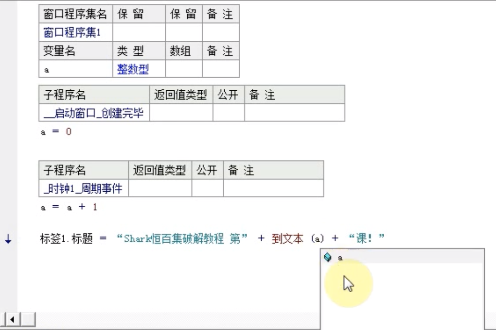
使时钟失效(两种方法：1、采用软件Xuter 2、现在使用的 利用系统函数改变时钟)：载入OD–进入易语言体(401000–FF 25 可以从中看到循环)—然后跟随表达式(ctrl+G) 输入SetTimer—就可以看到时钟事件：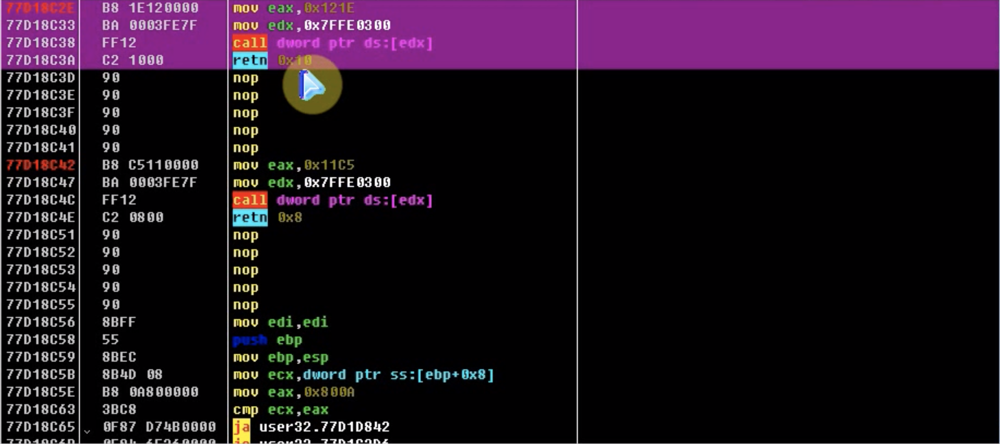
在 mov eax,0x121E 也就是时钟事件的首部 修改为:1
retn 10 \\要与段尾的retn 0x10 对应
重载后 就可以看到时钟停止了
窗体:
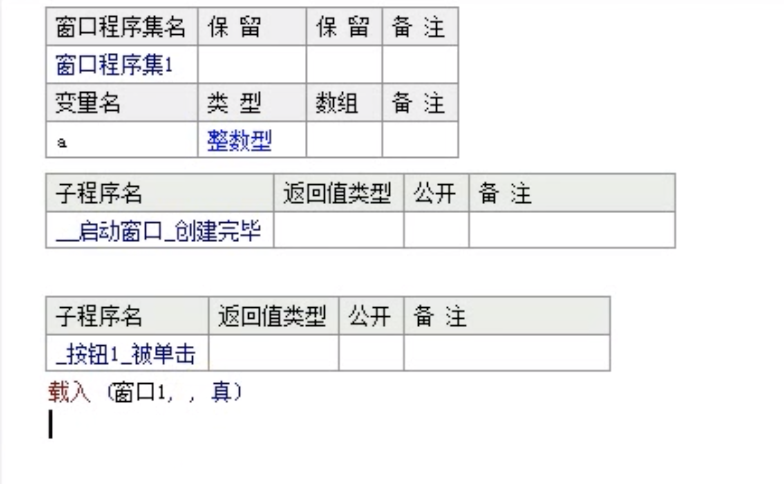
- 反汇编窗口中选中一行却选择下一行或者地址栏后有？ 分析代码(ctrl+a)
载入OD—进入易语言体：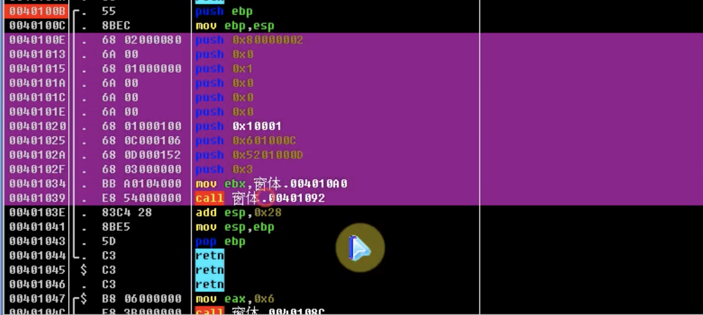
窗体创建代码–段首下断—运行—单步运行至call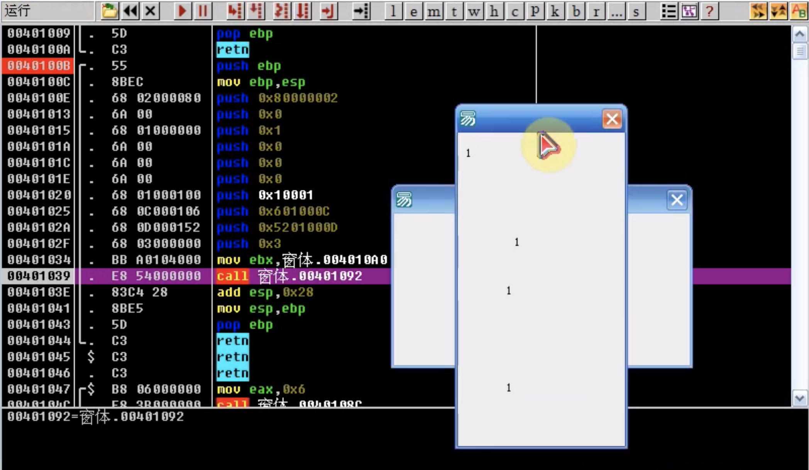
弹窗：
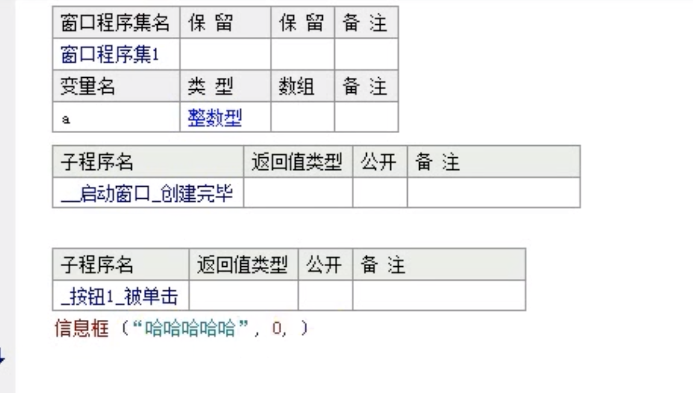
载入OD–进入易语言体(可以看到弹窗代码)：
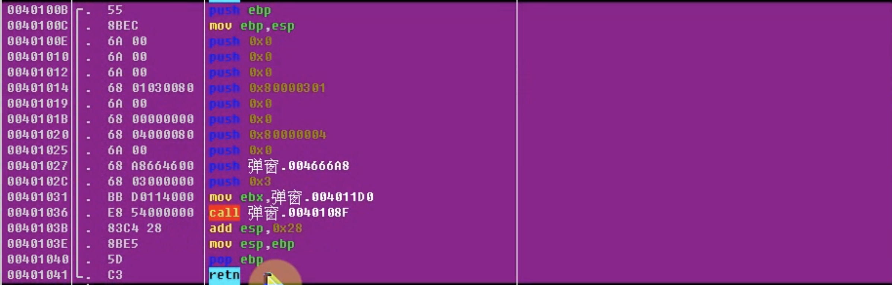
段首下断—单步运行至push 弹窗.004666A8—数据窗口中跟随立即数(能在数据窗口看到弹窗内容)
退出：
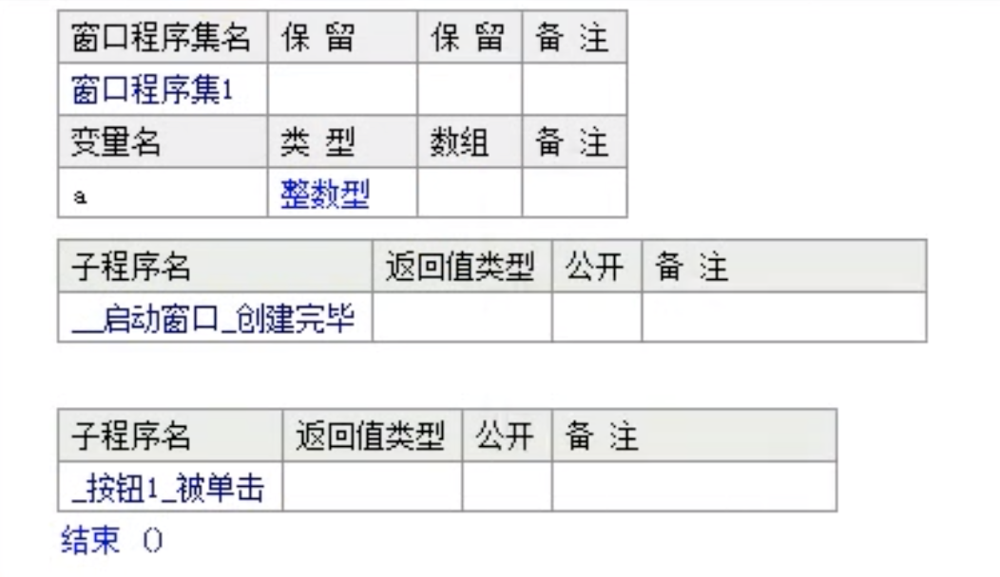
载入OD—进入易语言体—找到退出跳转jmp(从下往上 一般最后几个执行退出)—从最后一个jmp进入：
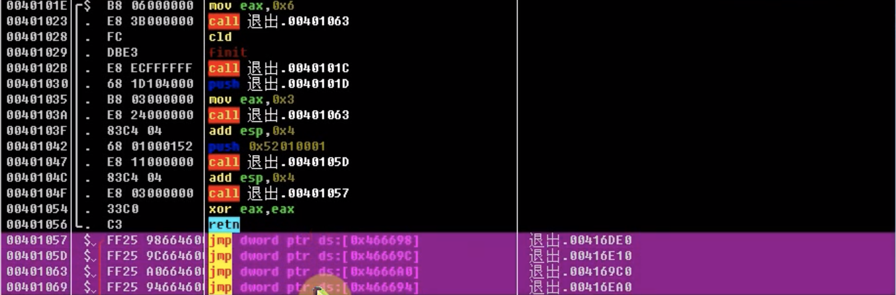
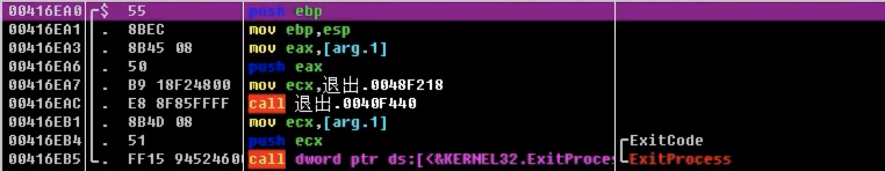
看到ExitProcess退出断点—在段首直接修改代码：
1 | push ebp --> retn |
但有时候也不能做到 则–在段首下断–运行程序–在堆栈窗口中反汇编跟随(返回到 退出.xxxx 来自 xxxx):
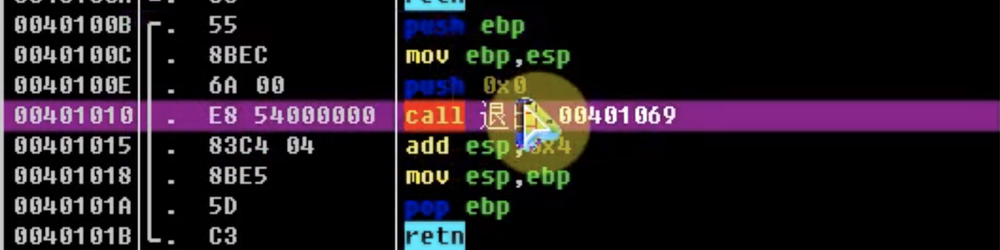
通常有跳转判断暗桩条件可以绕过这个call